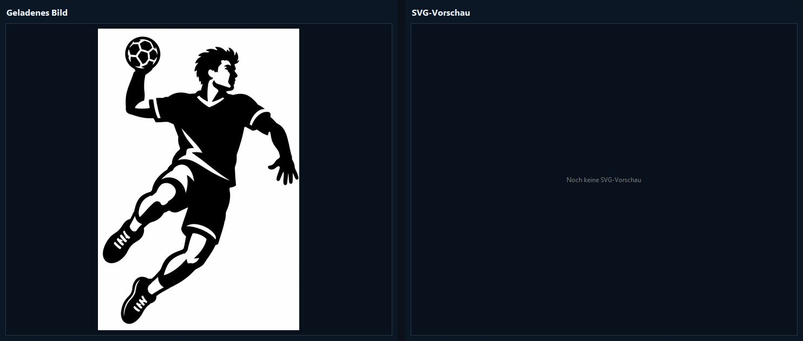
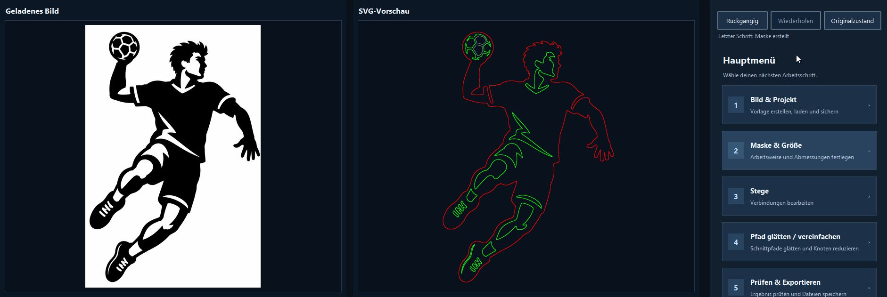
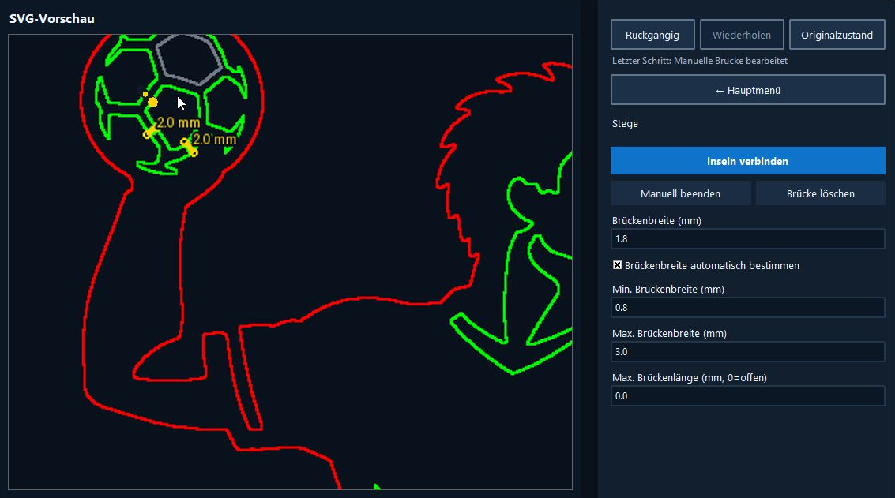
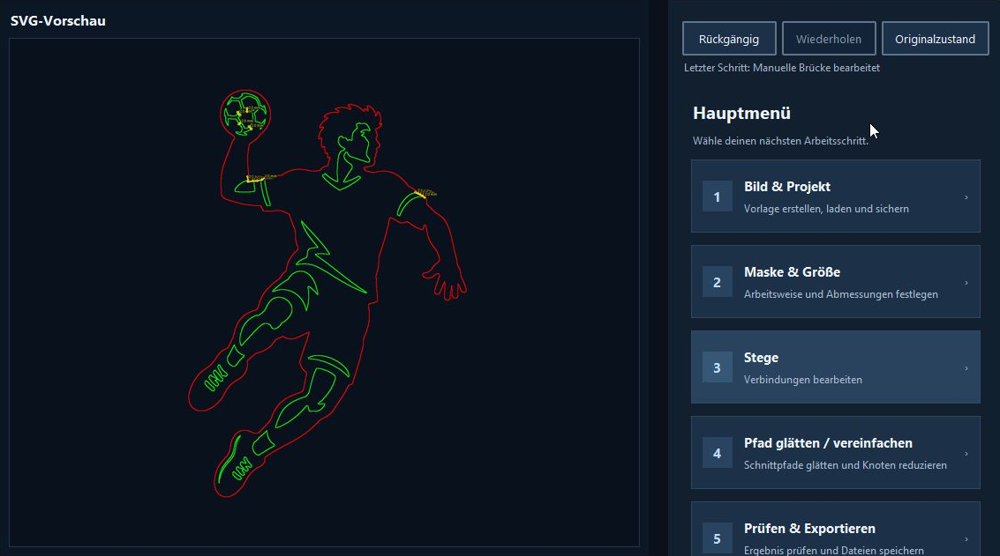
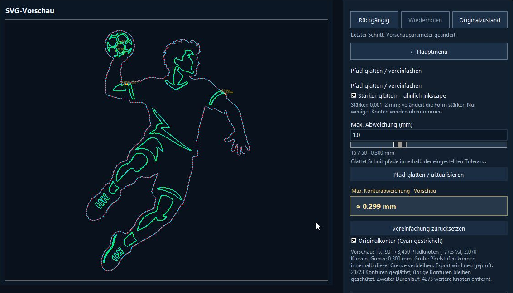
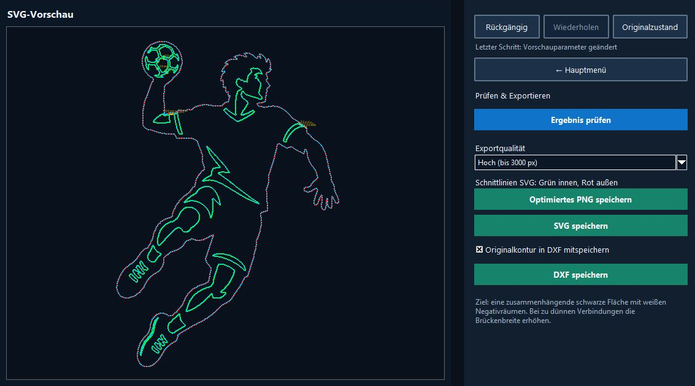
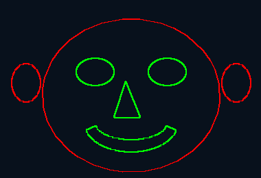

Avvio rapido con esempio: giocatore di pallamano
Queste schermate documentano una dimostrazione di V3.1.0. I valori riguardano questo esempio, non impostazioni universali di taglio. Dati di licenza e percorsi personali sono stati ritagliati. L’interfaccia mostrata è in tedesco.
1. Caricare l’immagine
Aprire Immagine e progetto e caricare il motivo. L’originale appare a sinistra; l’anteprima dei contorni è inizialmente vuota. Tornare al menu principale con il pulsante di ritorno.


2. Creare la maschera
Aprire Maschera e dimensioni, impostare larghezza e modalità di uscita, poi creare la maschera. I contorni esterni sono rossi e quelli interni verdi. Lo stato indicava inizialmente tre componenti neri separati. I parametri esatti della maschera non sono stati registrati durante la dimostrazione.


3. Aggiungere ponti
Aprire Ponti, ingrandire le parti separate e aggiungere connessioni manuali dove necessario. Sono stati modificati il pallone ed entrambe le maniche. I segni gialli mostrano i ponti; sul pallone era indicato 2,0 mm. Seguire le istruzioni di stato durante il disegno; un doppio clic sulla destinazione termina la connessione.


4. Controllare le connessioni
Controllare l’intero motivo, soprattutto le connessioni strette. L’esempio riportava infine un componente nero e 13 ponti. Sono risultati di questo esempio; verificare anche visivamente la geometria. Annulla e Ripeti consentono correzioni.


5. Levigare e confrontare
Aprire la semplificazione dei tracciati. Era attiva la modalità più forte, con scostamento massimo 1,0 mm e intensità 15 / 50: limite effettivo 0,300 mm. Avviare la levigatura e attendere la fine. Il campo evidenziato mostrava ≈ 0,299 mm. L’anteprima indicava 15.190 → 3.450 nodi (−77,3 %), 2.070 curve e 23/23 contorni levigati; la seconda passata aveva eliminato altri 4.273 nodi. Attivare il contorno originale per il confronto in ciano tratteggiato. La misura riguarda l’anteprima; altri motivi o risoluzioni di esportazione possono dare valori diversi.


6. Salvare DXF
Aprire Controllo ed esportazione. L’esempio usava qualità alta (fino a 3000 px) e inclusione del contorno originale nel DXF. Salvare il DXF, scegliere il nome e attendere il controllo di esportazione. Il messaggio di salvataggio conferma la conclusione. Il riferimento ciano è su REFERENZ_ORIGINAL. Disattivare esplicitamente il taglio di questo livello nel software laser: il solo colore non garantisce che venga ignorato.


Iniziare rapidamente
2. Interfaccia del programma
Dove trovare il comando: Immagine e progetto / Image & project
Conserva l'originale per esportazioni ad alta risoluzione.
Mostra ordine di taglio, contorni ignorati e ponti. La rotellina del mouse ingrandisce o riduce l’anteprima attorno alla posizione del puntatore. Con F tutti i contorni vengono riadattati alla finestra di anteprima.
Modalità, maschera, ponti, levigatura, dimensione ed export.
Componenti, ponti, avvisi e avanzamento.
«Crea motivo di taglio» e «Crea motivo da incidere»
Entrambi i comandi per i motivi aprono prima un generatore locale di prompt. Definire soggetto, materiale, dimensioni e dettagli, quindi generare il testo. Copia prompt copia il testo; Apri ChatGPT lo copia e apre l’assistente corrispondente nel browser. Solo questo passaggio facoltativo richiede Internet ed eventualmente accesso. Salvare l’immagine generata e caricarla manualmente; non viene restituita automaticamente.
3. Modalità di uscita
Dove trovare il comando: Maschera e dimensioni / Mask & size
Motivo di taglio
Le zone nere diventano contorni vettoriali chiusi per stencil, insegne e decorazioni.
Incisione + contorno esterno
L'immagine resta un'incisione raster incorporata. Solo la maggiore area esterna diventa il contorno rosso.
4. Ottimizzare la maschera
Dove trovare il comando: Maschera e dimensioni / Mask & size
| Impostazione | Effetto |
|---|---|
| Soglia nero | Determina quali luminosità diventano nere. Aumenta se mancano aree; riduci se le ombre si uniscono. |
| Inverti immagine | Scambia bianco e nero. |
| Smussa prima della maschera | Riduce il rumore; mantienilo basso per occhi, capelli e scritte. |
| Rimuovi parti piccole | Elimina aree isolate sotto un numero di pixel. |
I calcoli lunghi lavorano in background e possono essere annullati senza accettare risultati parziali.
Larghezza reale e area principale si trovano in Maschera e dimensioni. La larghezza in mm determina dimensioni di uscita e scala di ponti e tolleranze. L’area principale seleziona la superficie maggiore o quella vicina al centro come riferimento delle connessioni. Impostare le dimensioni prima dei ponti.
5. Contorni e colori
Dove trovare il comando: Maschera e dimensioni / Mask & size

I colori indicano il ruolo previsto: verde interno, rosso esterno. Controllare ordine e assegnazioni dopo l’importazione nel software laser.
I colori indicano il ruolo previsto: verde interno, rosso esterno. Controllare ordine e assegnazioni dopo l’importazione nel software laser.
Rilevato ma escluso dalla modalità scelta.
Posizione e larghezza di un collegamento.
Scegli solo esterno, esterno con fori o tutti i contorni annidati.
6. Ponti automatici e manuali
Dove trovare il comando: Ponti / Bridges
I ponti trattengono isole come pupille o interni delle lettere.

Automatico
Collega isole cerca collegamenti brevi senza collisioni, può usare due ponti per isole grandi e rispetta limiti di larghezza e lunghezza.
Ponti manuali e liberi
- Scegli Inserisci ponte manuale.
- Fai clic sul primo punto su un contorno nero. Si aggancia al contorno più vicino.
- Aggiungi tutti i punti intermedi liberi necessari per guidare il ponte attorno a occhi, testo o dettagli fini.
- Fai doppio clic sul contorno di destinazione per terminare il ponte libero. Solo inizio e fine devono toccare materiale nero.
- L'anteprima gialla live mostra il percorso durante il posizionamento con la larghezza ponte impostata.
- Backspace rimuove l'ultimo punto. Clic destro o Escape annulla l'operazione.
La larghezza manuale segue Larghezza ponti. Dopo la conferma, il ponte viene fuso con la maschera e può essere rimosso con Elimina ponte.
La larghezza automatica riguarda la connessione automatica delle isole, entro minimo e massimo. I ponti manuali usano Larghezza ponte (mm). Lunghezza massima 0 significa senza limite. Termina manuale esce dal disegno. Per eliminare scegliere Elimina ponte e fare clic sulla connessione gialla. Ricontrollare la levigatura dopo modifiche ai ponti.
7. Semplificazione dei tracciati, levigatura e dettagli
Dove trovare il comando: Semplificazione / Smooth / simplify paths
La vecchia levigatura SVG è stata rimossa. Senza semplificazione attiva si conserva il contorno della maschera, salvo punti intermedi esattamente allineati. La levigatura prima della maschera tratta immagine o maschera, non le curve Bézier.
Dopo aver creato la maschera, aprire « Smooth / simplify paths ». Impostare scostamento massimo e intensità, poi premere « Smooth / update paths ». Anteprima calcolata e statistiche dei nodi mostrano il risultato. I motivi grandi possono richiedere più tempo.
Modalità protetta: impostazione massima 0,1 mm. Modalità più forte simile a Inkscape: fino a 2 mm, con maggiori variazioni di forma. Tolleranza effettiva = scostamento massimo × intensità / 50. Esempio: 1 mm × 15 / 50 = 0,3 mm. Intensità 0 conserva il contorno originale.
La modalità più forte esegue automaticamente una seconda passata mirata. Entrambe vengono controllate rispetto all’originale con la stessa tolleranza totale; gli scostamenti non si sommano. Si verificano distanza in entrambe le direzioni e topologia. Dettagli critici e ponti stretti possono restare invariati o a gradini. Non è garantito un risultato identico a Inkscape.
Nel taglio si elaborano i tracciati selezionati. Per l’incisione occorrono insieme Incisione + contorno esterno E solo contorno esterno. Cambia soltanto il taglio esterno; incisione raster e grigi restano invariati.
Il riferimento originale è ciano tratteggiato. « Reset simplification » ripristina l’originale senza riattivare la vecchia levigatura. Annulla/Ripeti gestiscono i passaggi. Ricontrollare dopo modifiche a maschera, dimensioni o qualità di esportazione.
Riferimento DXF e scostamento misurato
Dove trovare il comando: Controllo ed esportazione / Check & export
In Check & export, Include original contour in DXF è disattivato per impostazione predefinita. I contorni originali selezionati vengono aggiunti in ciano su REFERENZ_ORIGINAL con il flag non stampabile. Escludere esplicitamente questo livello dall’uscita laser: nessun colore o attributo DXF ne garantisce l’esclusione.
Dopo la levigatura, Max. contour deviation · preview mostra la massima distanza minima bidirezionale in mm. L’errore numerico è inferiore a 0,001 mm. Non è una distanza normale unica agli angoli. Una diversa risoluzione di esportazione può produrre contorni e distanze diversi.
8. Annulla e ripeti
Fino a 20 stati conservano maschere, ponti, riparazioni, modalità e parametri. Annulla, Ripeti e Stato iniziale agiscono sull'immagine o progetto corrente. La cronologia della sessione non viene salvata nel progetto.
9. Salvare e aprire progetti
Dove trovare il comando: Immagine e progetto / Image & project
Un .lkfproj contiene immagine originale e di lavoro, maschere, ponti automatici e manuali, contorni, levigatura, dimensione ed export. I progetti danneggiati o incompatibili vengono rifiutati.
10. Formati e qualità di esportazione
Dove trovare il comando: Controllo ed esportazione / Check & export
| Formato | Uso |
|---|---|
| PNG | Maschera ottimizzata in bianco e nero. |
| SVG | Vettori: interni verdi prima, esterno rosso alla fine; la modalità incisione incorpora il raster. |
| DXF | DXF contiene contorni in millimetri: polilinee chiuse oppure entità SPLINE per i tracciati Bézier semplificati. L’incisione raster non è inclusa come immagine DXF. Verificare il supporto SPLINE nel programma di destinazione. |
Rapida usa l'anteprima, Alta ricalcola fino a 3000 px, Originale usa tutta la risoluzione. Filtri, ponti e levigatura vengono scalati.
11. Controllo e riparazione
Dove trovare il comando: Controllo ed esportazione / Check & export
Gli avvisi gialli possono essere confermati; gli errori rossi bloccano probabili tagli difettosi. Il controllo rileva contorni mancanti, aree separate, ponti insicuri o stretti, geometrie minuscole, auto-intersezioni e complessità eccessiva. La finestra spiega la causa e avvia la correzione consigliata.
File NC / Generate NC file
Generate NC file è un menu riservato senza comandi. V3.1.0 non crea file NC e non controlla macchine.
Aiuto e impostazioni
Aprire l’aiuto o scegliere tedesco, inglese, francese, spagnolo o italiano. License / activation apre l’inserimento del codice. About mostra versione e autore; Support project apre il dialogo di sostegno. Il pannello licenza in alto a destra offre ID installazione, richiesta e attivazione. I nuovi menu e alcune funzioni usano ancora l’inglese fuori dall’interfaccia tedesca. L’aiuto segue la lingua scelta.
12. Prova e licenza offline
Dove trovare il comando: Aiuto e impostazioni / Help & settings
Il programma può essere provato per 30 giorni. Dopo, il pannello licenza resta accessibile. Inserisci nome ed e-mail, crea una richiesta con l'ID installazione e incolla il codice ricevuto. L'attivazione Ed25519 è completamente offline e l'app contiene solo la chiave pubblica.
13. Flusso consigliato per i volti
- Usa un'immagine contrastata con sfondo tranquillo.
- Regola la soglia per separare occhi, naso e bocca.
- Rimuovi le parti piccole con cautela.
- Collega automaticamente e controlla ogni ponte.
- Elimina ponti antiestetici e inseriscili su ombre discrete.
- Se necessario, applicare la semplificazione protetta con una tolleranza effettiva piccola e confrontare i dettagli con l’originale.
- Salva il progetto ed esegui il controllo export.
14. Risoluzione dei problemi
| Problema | Soluzione |
|---|---|
| Immagine vuota o nera | Cambia inversione e sposta la soglia in senso opposto. |
| Mancano dettagli | Riduci rimozione parti e levigatura. |
| Isola non collegata | Aumenta la lunghezza massima, usa 0 o inserisci un ponte manuale. |
| Export originale lento | Usa qualità Alta, limitata a 3000 px. |
| Progetto non apribile | Usa un .lkfproj integro e compatibile. |
Per contorni frastagliati usare la semplificazione, attendere il calcolo e confrontare l’originale. Angoli critici e ponti stretti possono rimanere. Nell’incisione occorrono insieme Incisione + contorno esterno e solo contorno esterno. Un trattino nello scostamento indica assenza di valore valido; i puntini indicano il calcolo. Confronto ciano dell’anteprima e riferimento DXF sono opzioni indipendenti.
15. Scorciatoie e controllo finale
Ctrl+Z Annulla · Ctrl+Y o Ctrl+Maiusc+Z Ripeti · Rotellina del mouse nell’anteprima SVG: zoom attorno al puntatore · F nell’anteprima SVG: adatta tutti i contorni alla finestra
- Controlla larghezza reale e materiale.
- I contorni verdi devono essere tagliati prima del rosso.
- Ogni isola necessaria deve avere ponti abbastanza larghi.
- Non devono restare errori rossi.
- Verifica materiale, fuoco, potenza e velocità.
Rotella sull’anteprima: zoom intorno al puntatore. F: adatta tutti i contorni. Ponte manuale: Backspace rimuove l’ultimo punto; Escape o clic destro annulla; doppio clic sulla destinazione termina.